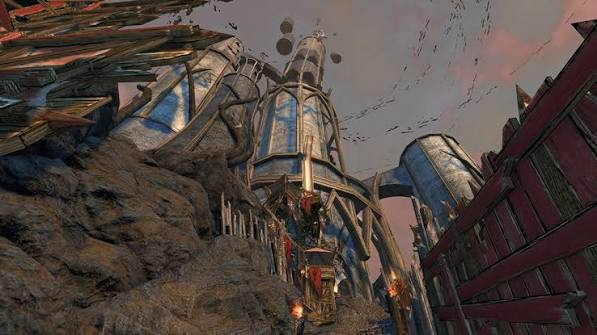

DUNGEON MECHANICS
CLOAK TOWER
Dodge the red. Control the adds. Don't get launched across the room.

OVERVIEW
CLOAK TOWER
Cloak Tower has three boss encounters built mainly around avoiding telegraphed attacks and controlling additional enemies as they spawn.
BOSS ONE
MAKRED THE FOUL
- Makred uses a spear and has strong attacks directly in front of him.
- His frontal attack can knock players backwards.
- Avoid standing directly in front of him when the attack begins.
- Position behind the boss where possible to avoid his frontal attacks.
- Watch for red areas appearing on the ground and move out before the attack lands.
- Being caught inside the red area can knock players to the floor.
- Additional enemies spawn during the encounter. Kill them before they begin to build up.
BOSS TWO
THROG THE RAVENOUS
- Throg has a large health pool and uses heavy melee attacks.
- Watch for his sweeping attack across the area in front of him.
- Players caught inside the telegraphed attack can be knocked away.
- Move outside the attack area before the swing lands.
- Throg summons additional enemies during the fight.
- Control the adds while continuing to damage the boss.
FINAL BOSS
VANSI BLOODSCAR
- Vansi can rapidly charge or jump toward the player she is targeting.
- Watch for the large red frontal area that appears before her heavy attack.
- Anyone caught in front of her when the attack lands can take heavy damage and be knocked away.
- Move away from her front whenever the telegraph appears.
- Vansi summons additional enemies throughout the fight.
- Kill the adds when they appear rather than allowing repeated waves to accumulate.
- Continue controlling the adds and avoiding Vansi's frontal attacks while damaging the boss.
QUICK REFERENCE
DON'T GET YEETED
- Red area appears → move.
- Avoid standing directly in front of the bosses.
- Makred → watch the spear and frontal knockback.
- Throg → avoid the sweeping frontal attack.
- Vansi → dodge her charge and heavy frontal attack.
- Adds spawn → kill them before more arrive.